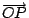
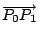

．作者任教於香港科技大學數學系
六、座標解析幾何簡介
項武義
|
|
．作者任教於香港科技大學數學系 | ||
|
六、座標解析幾何簡介
項武義 |
|
幾何學在古希臘文明蓬勃進展，獲得輝煌的成就， 奠定了定性和定量幾何的基礎理論。在西方， 由古希臘文明一直到十五、六世紀的文藝復興， 理性文明歷經了上千年的暗淡時期。其間戰亂不斷， 希臘文明的成果，僅賴東羅馬(Byzantine Empire) 和阿刺伯文明得以保存其大部。長話短說，1453 年東羅馬帝國的滅亡 迫使大批希臘學者和書稿流入意大利，和當時經由阿刺伯傳入的中國 印刷術，促成了希臘數理名著如 Euclid 的 ``Elements'', Apollonius 的 ``Conic Sections'', Diophantus 的 ``Arithmetica''等等的 拉丁文版在意大利相繼問世。希臘文明的碩果終于熬過了上千年的暗淡歲月， 浴火重生；在歐洲大陸重新札根、萌芽、茁壯，發展成影響全世界的近代科 技文明。數學和天文學的進展，又再一次扮演著先行者、奠基者的角色， 此點在近代科學的創始者如 Copernicus, Brahe, Kepler, Galileo,Vieta, Descartes, Fermat, Newton, Leibniz 等等的貢獻中可見其梗概。 而其中影響無比深遠者則首推坐標解析幾何和微積分， 它們奠定了對于各種各樣自然現象作深刻的數理分析的基本工具。 Descartes 和 Fermat 在坐標解析幾何學上的創建，把當代新興的代數學， 系統地用來研究幾何。他們的工作都直接得益于 Vieta 在代數學上的著作。 總之，幾何學和代數學從此得以密切結合、相輔相成、相得益彰。 它不但促進了兩者的大幅度進展，而且也使得微積分學的展現變得水到渠成。 所以坐標解析幾何學的創見，乃是整個人類理性文明發展史上的一件大事。 從幾何學的發展史來看，向量代數的產生乃是十九世紀中葉的事， 足足比坐標解析幾何的產生晚了兩個世紀。如今回顧、反思， 可見向量代數其實乃是坐標幾何的返璞歸真和精益求精， 它使得幾何和代數結合得更加真切自然、直截了當。在此， 我們將改用向量代數為工具回頭來對于坐標解析幾何作一簡明扼要的介紹。 這種講法雖然是歷史發展的逆序， 但是這種返璞歸真的向量講法可以把解析幾何的精要體現得更加簡明樸實。
在平面（或空間）中取定一點 O 為基點（稱之為原點），則其中任給一點 P
的位置就可以用位移向量
（亦即平移 ）加以唯一
確定。改用集合的術語來說，即平面（或空間）中所有點所成的集合和平面（或空間）的
所有位移向量（亦即平移）所構成的代數體系之間具有上述自然的一、一對應，即
（亦即
）。這個一、一對應顯然和原點的選取有關。例如
再者，在平面上我們可以取用兩個互相垂直的射線 和 ，而在空間之中則可以取用三個互相垂直的 , 和 。令 , 和 由此可見 P 點在平面（或空間）中的位置又可以用有序數組 (x,y)（或 (x,y,z)）加以唯一確定，稱之為 P 點在平面坐標系 （或空間坐標系 ）中的坐標。如 [圖 6-1] 所示，x, y, z 的幾何意義乃是位移向量 （亦即有向線段）在 x, y, z-軸上的垂直投影的有號長度是也。
[ 圖 6-1 ]
在平面上（或空間中）選取一個正交坐標系，不但可以有系統地用有序數偶
(x,y)（或三數組 (x,y,z)）來標記平面上（或空間中）點的位置，而且也可以用下述有序數偶（或三數組）來表達平面上（或空間中）的向量，即
通常把 ax, ay, az 分別叫做向量
再者，用向量
的下述內積關係
和向量運算律即可推導改用分量來表達的向量運算公式，即
由所設
的正交性和右手型，即有
再用分配律，即有 
將 (iii)-式和 (iv)-式相結合，即得 由此可見，選取正交坐標系所達成者乃是把四種向量運算，有系統地歸于向量的分量加以計算，而這些運算公式都是正交性和分配律的直接推論。
距離公式：直線段的長度是空間的各種各樣幾何量之中的最、最基本者。所以坐標幾何的頭號基本公式理當是給定兩點 P1, P2 之間的距離的坐標表達式，即
夾角公式：設 P0, P1, P2 是給定三點，則
 和
之間的夾角 θ
的餘弦可以用它們的內積公式計算之，即
三角形面積公式：設 P0, P1, P2 是平面上（或空間中）的給定三點，則
四面體體積公式：設 P0, P1, P2, P3 是空間中給定四點，則其所張的四面體
T(P0,P1,P2,P3) 的定向體積可以用下述公式表達之，即
[試用 驗証上式。] 【習題】：
|
對外搜尋關鍵字： ．Euclid ．Apollonius ．Diophantus ．Copernicus ．Brahe ．Kepler ．Galileo ．Vieta ．Descartes ．Fermat ．Newton ．Leibniz ．解析幾何 ．微積分 ．向量代數 ．平移 |
|
|
|
|
（若有指正、疑問……，可以在此 留言 或 寫信 給我們。） |
|
|
|
EpisteMath (c) 2000 中央研究院數學所、台大數學系 各網頁文章內容之著作權為原著作人所有 |
| 最後修改日期：6/19/2004 |